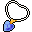
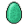
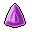
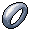
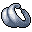

Blackwater mountain 25¶
| Map ID | blackwater_mountain25 |
| Region | In Prim (settlement) |
| Type | Indoors / underground |
| Size | 11×24 tiles |
| Introduced | v0.7.0 or earlier |
| NPCs | 7 |
| Quests | 0 |
| Containers | 7 |
Blackwater mountain 25 is an indoor map, in Prim (settlement). It has 7 NPCs, and no enemies. Exits lead to Blackwater mountain 11.
Map¶
Key to the numbers on the map
| # | What | Details |
|---|---|---|
| 1 | Exit (south) | to Blackwater mountain 11 |
| 2 | Prim priestly acolyte | NPC |
| 3 | Prim pupil | NPC |
| 4 | Prim treasury guard | NPC |
| 5 | Reading Prim pupil | NPC |
| 6 | Samar | shopkeeper |
| 7 | Strong Prim treasury guard | NPC |
| 8 | Studying Prim pupil | NPC |
| 9 | Quest trigger | Scripted event: advances the quest: hidden story flag “nondisplay” to stage 83 (“prim_treasure_init”) |
| 10 | Quest trigger | Scripted event: advances the quest: hidden story flag “nondisplay” to stage 81 (“prim_treasure_1”) |
| 11 | Quest trigger | Scripted event: advances the quest: hidden story flag “nondisplay” to stage 82 (“prim_treasure_2”) |
| 12 | Quest trigger | Scripted event: advances the quest: hidden story flag “nondisplay” to stage 84 (“prim_treasure_4 taken”) |
| 13 | Quest trigger | Scripted event: advances the quest: hidden story flag “nondisplay” to stage 85 (“prim_treasure_5 taken”) |
| 14 | Quest trigger | Scripted event: advances the quest: hidden story flag “nondisplay” to stage 87 (“prim_treasure_7 taken”) |
| 15 | Quest trigger | Scripted event: advances the quest: hidden story flag “nondisplay” to stage 88 (“prim_treasure_8 taken”) |
| 16 | Quest trigger | Scripted event: advances the quest: hidden story flag “nondisplay” to stage 89 (“prim_treasure_9 taken”) |
| 17 | Container 1 | Prim treasury key |
| 18 | Container 2 | Gold coins, Lesser shielding necklace |
| 19 | Container 3 | Gold coins, Glass gem, Polished sparkling gem, Sharpened gem |
| 20 | Container 4 | Gold coins, Ring of damage +1, Ring of damage +2 |
| 21 | Container 5 | Gold coins, Jinxed ring of damage resistance |
| 22 | Container 6 | Gold coins |
| 23 | Container 7 | Gold coins |
| 24 | Blocked passage | Unlocked during the quest: hidden story flag “nondisplay” (stage 80: “prim_treasure_door”) |
| 25 | Blocked passage | Closed off once you reach this point in the quest: hidden story flag “nondisplay” (stage 80: “prim_treasure_door”) |
Verified against v0.8.18 map data.
Connections¶
| Direction | Leads to | Region there | Map # |
|---|---|---|---|
| South | Blackwater mountain 11 | Prim | 1 |
NPCs¶
- Prim priestly acolyte (#2)
- Prim pupil (#3)
- Prim treasury guard — can be fought (#4)
- Reading Prim pupil (#5)
- Samar — shopkeeper (#6)
- Strong Prim treasury guard — can be fought (#7)
- Studying Prim pupil (#8)
Items & containers¶
Shops: Samar
- Prim treasury key 100%
 Gold coins 100% · ×10 to 20
Gold coins 100% · ×10 to 20
Lesser shielding necklace 50%
- Gold coins 100% · ×20 to 40
- Glass gem 100% · ×1 to 2

Polished sparkling gem 50%
Sharpened gem 50%
- Gold coins 100% · ×200 to 300

Ring of damage +1 33%
Ring of damage +2 33%
- Gold coins 100% · ×500 to 900
- Jinxed ring of damage resistance 100%
- Gold coins 100% · ×1800 to 2800
- Gold coins 100% · ×1500 to 2500
Quests¶
- General story flags (hidden flag): blocked passage closes at stage 80; blocked passage opens at stage 80; something on this map advances it; stepping on a trigger here sets stage 81; stepping on a trigger here sets stage 82; stepping on a trigger here sets stage 83; stepping on a trigger here sets stage 84; stepping on a trigger here sets stage 85; stepping on a trigger here sets stage 87; stepping on a trigger here sets stage 88; stepping on a trigger here sets stage 89
Points of interest¶
- Quest trigger (#9): Scripted event: advances the quest: hidden story flag “nondisplay” to stage 83 (“prim_treasure_init”)
- Quest trigger (#10): Scripted event: advances the quest: hidden story flag “nondisplay” to stage 81 (“prim_treasure_1”)
- Quest trigger (#11): Scripted event: advances the quest: hidden story flag “nondisplay” to stage 82 (“prim_treasure_2”)
- Quest trigger (#12): Scripted event: advances the quest: hidden story flag “nondisplay” to stage 84 (“prim_treasure_4 taken”)
- Quest trigger (#13): Scripted event: advances the quest: hidden story flag “nondisplay” to stage 85 (“prim_treasure_5 taken”)
- Quest trigger (#14): Scripted event: advances the quest: hidden story flag “nondisplay” to stage 87 (“prim_treasure_7 taken”)
- Quest trigger (#15): Scripted event: advances the quest: hidden story flag “nondisplay” to stage 88 (“prim_treasure_8 taken”)
- Quest trigger (#16): Scripted event: advances the quest: hidden story flag “nondisplay” to stage 89 (“prim_treasure_9 taken”)
- Blocked passage (#24): Unlocked during the quest: hidden story flag “nondisplay” (stage 80: “prim_treasure_door”)
- Blocked passage (#25): Closed off once you reach this point in the quest: hidden story flag “nondisplay” (stage 80: “prim_treasure_door”)
Version history¶
| Version | Change |
|---|---|
| v0.7.0 | Present in v0.7.0 (earliest release tracked) |
| v0.7.1 | Map layout or objects changed |
| v0.7.2 | Map layout or objects changed |
| v0.8.2 | Map layout or objects changed |
| v0.8.15 | Map layout or objects changed |
Verified against v0.8.18 and every earlier release back to v0.7.0 (game data compared release by release).
Community notes¶
Written by players, not generated from game data. Observations: what players notice in-game · Lore: the in-world story · Trivia: real-world facts, references, development history · Theory / speculation: unconfirmed ideas; may just be unfinished content
Observations¶
No notes yet. Contributions are welcome: add a note.
Lore¶
No notes yet. Contributions are welcome: add a note.
Trivia¶
No notes yet. Contributions are welcome: add a note.
Theory / speculation¶
No notes yet. Contributions are welcome: add a note.
Technical information
| Map ID | blackwater_mountain25 |
| File | res/xml/blackwater_mountain25.tmx |
| Size | 11×24 tiles (352×768 px) |
| outdoors property | – |
| Layers drawn | ground, objects, above, top |
| Tilesets | map_bed_1, map_border_1, map_bridge_1, map_bridge_2, map_broken_1, map_cavewall_1, map_cavewall_2, map_cavewall_3, map_cavewall_4, map_chair_table_1, map_chair_table_2, map_crate_1, map_cupboard_1, map_curtain_1, map_entrance_1, map_entrance_2, map_fence_1, map_fence_2, map_fence_3, map_fence_4, map_ground_1, map_ground_2, map_ground_3, map_ground_4, map_ground_5, map_ground_6, map_ground_7, map_ground_8, map_house_1, map_house_2, map_indoor_1, map_indoor_2, map_kitchen_1, map_outdoor_1, map_pillar_1, map_pillar_2, map_plant_1, map_plant_2, map_rock_1, map_rock_2, map_roof_1, map_roof_2, map_roof_3, map_shop_1, map_sign_ladder_1, map_table_1, map_trail_1, map_transition_1, map_transition_2, map_transition_3, map_transition_4, map_transition_5, map_tree_1, map_tree_2, map_wall_1, map_wall_2, map_wall_3, map_wall_4, map_window_1, map_window_2 |
| Map objects | script: 8, container: 7, spawn: 7, replace: 6, key: 2, mapchange: 1 |
| World map position | – |
Data from v0.8.18